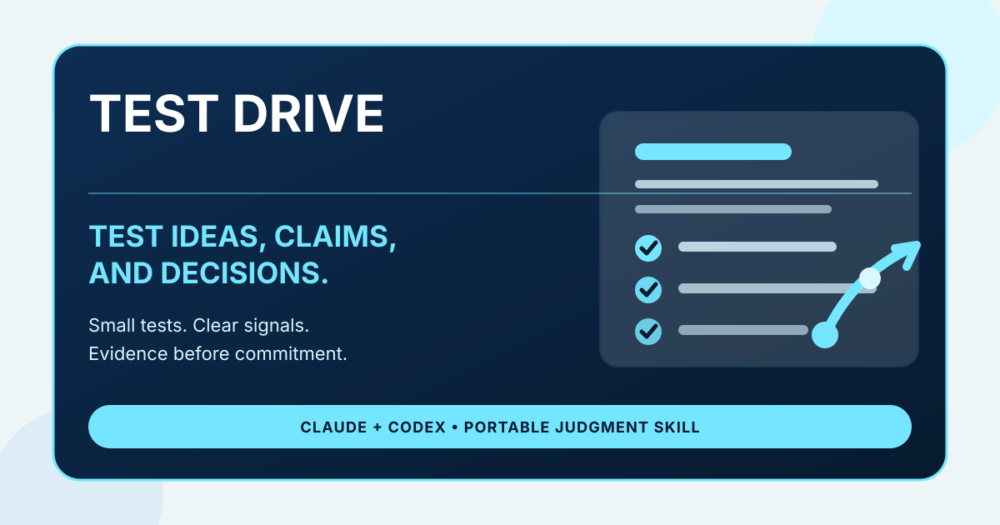

What it does
Test Drive identifies what kind of evidence would matter, chooses the smallest credible test, creates or recommends the artifact needed, and names any connector or approval gate required.
Claude + Codex agent skill
Try an idea before you trust it. Test Drive turns plausible ideas, decisions, prompts, skills, strategies, data claims, and artifacts into small evidence-seeking trials.

What it does
Test Drive identifies what kind of evidence would matter, chooses the smallest credible test, creates or recommends the artifact needed, and names any connector or approval gate required.
Test Drive is horizontal because it routes by evidence type, not domain.
Use interviews, surveys, posts, messages, or prototype feedback when the idea depends on what people understand, want, remember, or choose.
Use cohort analysis, funnel analysis, segmentation, correlation, regression, or before/after readouts when the claim depends on observed behavior.
Use Ground Truth, The Quorum, pre-mortems, counterexample searches, or stakeholder lenses when the question depends on logic and trade-offs.
Use dry runs, eval cases, rubric scoring, connector checks, permission reviews, or pilot workflows when the thing itself has to work in practice.
"I think this positioning is right, but I do not know if I am overfitting to language I personally like."
Test Drive classifies the uncertainty as Human Reaction plus Artifact Performance, drafts two message variants, defines resonance and failure signals, recommends a manual or connector-assisted posting path, and sets a learning loop.
Download the packaged skill from the release, or ask Codex to install it from GitHub.
Ground Truth challenges the reasoning. Test Drive designs the evidence-seeking trial that would make the idea more or less trustworthy.
It can recommend and structure analytical tests such as cohort analysis, segmentation, funnel analysis, correlation, or regression. It can run analysis when the environment has approved data access and tooling.
It can draft or build safe artifacts. It should ask for explicit approval before sending, posting, publishing, querying sensitive systems, or changing external state.